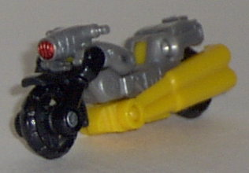
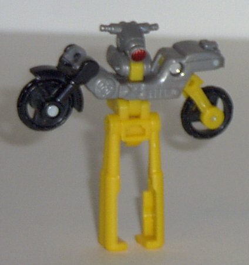
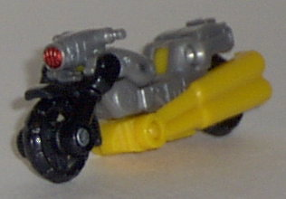
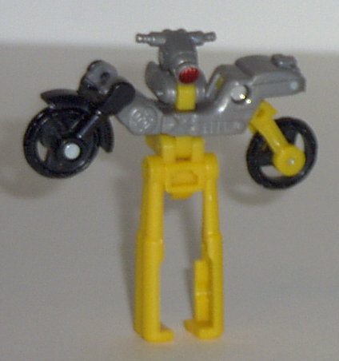
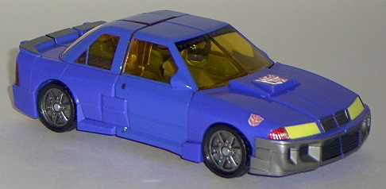
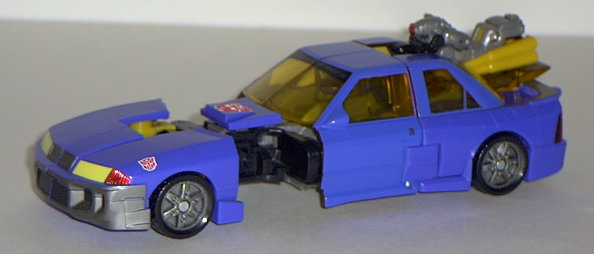
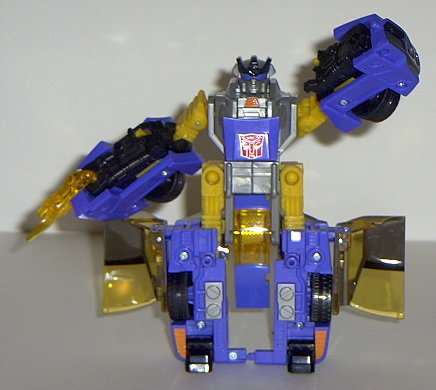
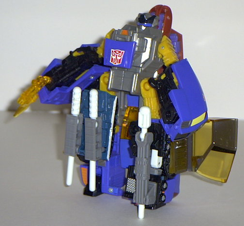

Nightbeat
Nightbeat
 
Allegiance : Minicon
Size : Mini-Con
Difficulty of Transformation : Very Easy
Color Scheme : Gunmetal gray, black, orange-yellow, and some shiny metallic red
Rating : 1.4
Nightbeat


Allegiance
: Minicon
Size
: Mini-Con
Difficulty of Transformation
: Very
Easy
Color Scheme
: Gunmetal gray, black,
orange-yellow, and some shiny metallic red
Rating
: 1.4
Vehicle mode is a motorcycle.
This mode is pretty nice, with no apparent extras and decent mold detailing.
The paint detailing could use a bit of work, though- the only bit of paint
on Nightbeat's entire body is on his headlight. He also has a rather bad
tendancy to flop onto one side- his exhaust ports on his sides don't really
hold him up that well, and at this scale it's not really possible to have
a kickstand. The Minicon symbol is on the left front side of the vehicle,
and the Minicon port is on the bottom, slightly to the rear of center.
Nightbeat's robot mode...
is almost too horrible for words. It's just.. completely and totally UGLY.
I see NO redeeming features in it whatsoever, except for the fact that
it's not neon orange. For one, his arms aren't even arms at all- they're
just wheels. There's not even an ATTEMPT to make them look like arms. His
head is also nothing more than the headlight from the front of the vehicle
mode, and looks like it came from some stupid '50s sci-fi movie. His legs
are also stiff, skinny sticks, and have a hard time holding him up by himself.
He also has only front-and-back leg movement in this mode, and maybe a
little bit of movement on his left shoulder, but that's it.
Nightbeat's vehicle
mode is alright, but his robot mode is so bad it completely negates any
of the the alt mode's positives and then some. If Nightbeat didn't come
with Sideswipe, I wouldn't have bought him, and I'm Mr. Completist. Yeech.
 Sideswipe
Sideswipe


Allegiance
: Autobot
Size
: Super-Con
Difficulty of Transformation
: Medium
Color Scheme
: Gunmetal gray, orange-yellow,
deep sky blue, black, transparent amber, and some fluorescent orange, shiny
metallic red, gunmetal silver, and bright yellow
Powerlinx ports
: 4 (1 gimmicked)
Rating
: 6.5
Vehicle mode is a sedan. This mode is pretty nice, although it's very "un-Armadaish" in the fact that it's a very realistic vehicle mode. Smooth and un-futuristic detailing abound here. In addition, there's no visibie Minicon ports in this mode! This leads us to Sideswipe's rather cool main gimmick in this mode- press on a small button on one of his rear headlights and a panel flips open, to reveal... Nightbeat! (Well... if you made sure to put him there beforehand...) Nightbeat stays solidly in his container, though, even when the panel is flipped back into the car. However, the panel is too skinny for any other Minicons except Nightbeat to fit into. Sideswipe's other gimmick is rather silly- press on the buttom with the Autobot insignia on the front of the car and the car "extends", as seen above. It doesn't really serve any real purpose, though, which raises a big "?" on this one. Another feature that is uncommon to Armada is the transparent windows- although in this case, I'm not sure if it's a good thing, since you can easily see Sideswipe's robot head inside the vehicle. Oh, and Sideswipe's robot mode weapons fall out rather easily from the underside.


Sideswipe's robot mode
is horrendous, mainly because of the extreme proportion problems he has
in this mode. For one, his lower arms are ludicrously large and bulky when
compared with his upper arms- especially from a side view, where it becomes
obvious that the arm is more than TWICE as wide in the lower half than
in the upper half. Also, said lower halves of the arms are encased in a
"car hood" shell in all areas except from the front, which looks kind of
odd. Moving the main body, it's a bit too small when compared with his
lower arms and lower legs, and his chest sticks out much too far from his
actual head. Now we go down to the legs, where the same kind of proportion
problems appear here as they did with the arms- the lower legs are much,
much larger than the upper legs, although at least it's not as drastic
here. However, it is magnified by the fact that he has these large car
window panels just hanging off his legs, doing absolutely nothing for the
look. The small flip-panel that was used for holding Nightbeat in vehicle
mode also just sticks out between his legs and looks stupid. His Powerlinx
ports on his legs are also too shallow to get most Minicons to hang on
there reliably. On the plus side, though, his gimmick is alright- put a
Minicon on the Powerlinx port on his back, press down, and his right arm
swings up for a knockout punch. His gun-bayonet weapon is also pretty cool.
Sideswipe's vehicle
mode is pretty nice, if a bit un-Armada in its style. But the robot mode
is the worst out of any larger Armada figure, and has definitely has some
major proportions problems. Putting both vehicle mode and robot mode together,
overall I'd have to say that Sideswipe is my 2nd-least-favorite non-Minicon
toy for Armada, next to non-Powerlinx Hot Shot.
Review by Beastbot